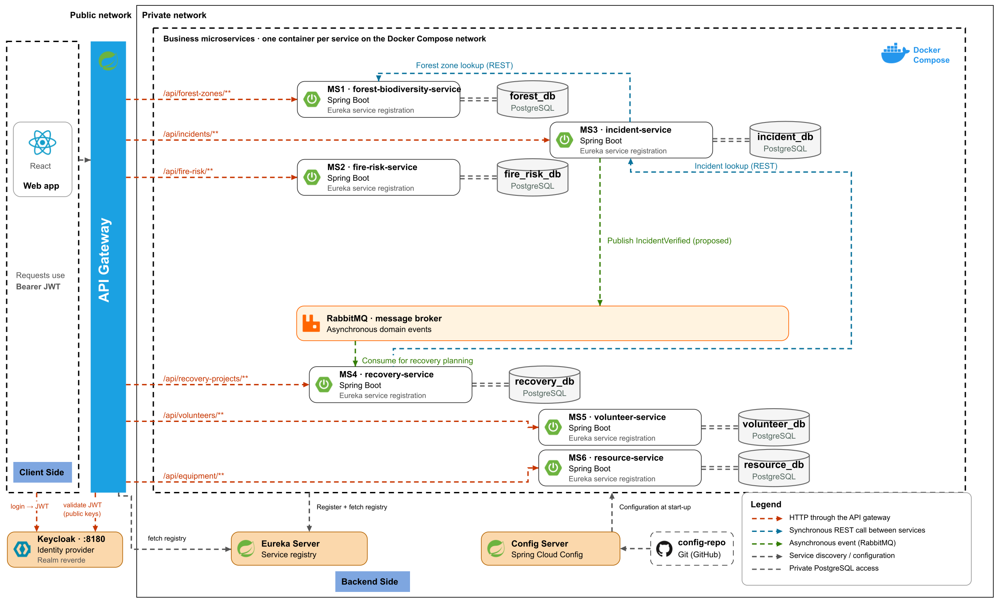

Microservices architecture
Overview of the ReVerde platform: six Spring Boot microservices, each with its own PostgreSQL database, behind an API gateway that validates JWTs issued by Keycloak. Services use Eureka for discovery, Spring Cloud Config backed by a GitHub configuration repository, and RabbitMQ for asynchronous events. Docker Compose is the proposed deployment setup.

Diagram toolbar: zoom, change page, full screen. The pencil opens an editable copy in diagrams.net. Without an Internet connection, the PNG image is shown instead.
Components
| Component | Technology | Port | Eureka name | Database | Role |
|---|---|---|---|---|---|
| MS1 · forest-biodiversity-service | Spring Boot | TBD | FOREST-BIODIVERSITY-SERVICE | PostgreSQL (forest_db) | Zones, species and biodiversity observations |
| MS2 · fire-risk-service | Spring Boot | TBD | FIRE-RISK-SERVICE | PostgreSQL (fire_risk_db) | Weather records, risk assessments and thresholds |
| MS3 · incident-service | Spring Boot | TBD | INCIDENT-SERVICE | PostgreSQL (incident_db) | Fire incidents and damage assessments |
| MS4 · recovery-service | Spring Boot | TBD | RECOVERY-SERVICE | PostgreSQL (recovery_db) | Recovery projects and planting records |
| MS5 · volunteer-service | Spring Boot | TBD | VOLUNTEER-SERVICE | PostgreSQL (volunteer_db) | Volunteers, activities and registrations |
| MS6 · resource-service | Spring Boot | TBD | RESOURCE-SERVICE | PostgreSQL (resource_db) | Equipment, categories and allocations |
| API Gateway | Spring Cloud Gateway | TBD | API-GATEWAY | – | JWT validation and routing |
| Eureka Server | Spring Cloud Netflix | TBD | – | – | Service registration and discovery |
| Config Server | Spring Cloud Config | TBD | – | – | Centralised service configuration read from the GitHub config repository |
| Keycloak | OpenID Connect | 8180 (example) | – | – | Identity provider for the reverde realm. Issues JWTs for the client. |
| config-repo | Git (GitHub) | – | – | – | Stores configuration read by Spring Cloud Config. |
| RabbitMQ | RabbitMQ | TBD | – | – | Asynchronous domain events |
Key points
- The React client sends requests through the gateway.
- Each business service owns a private PostgreSQL database.
- Eureka helps the gateway and services find registered instances.
- Use synchronous REST lookups for required data and RabbitMQ for events that consumers can process later.